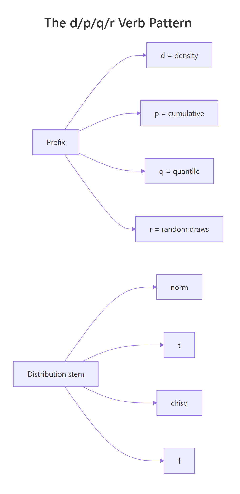
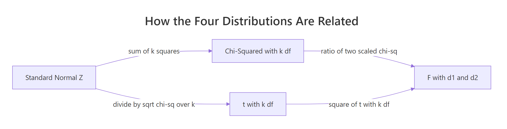
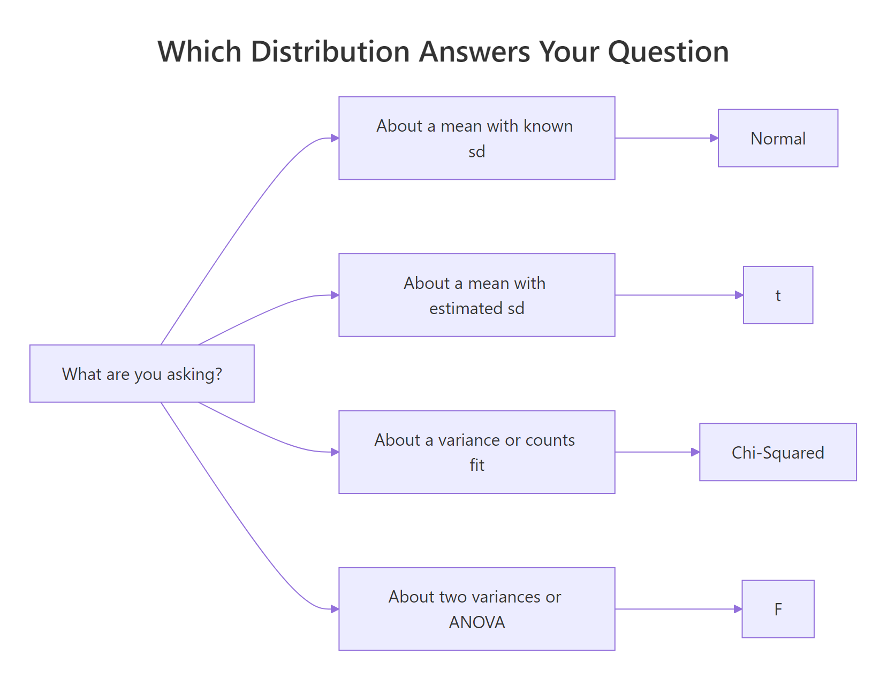

Normal, t, F, and Chi-Squared in R: Understand Each Distribution and When It Arises
The Normal, t, F, and Chi-Squared distributions are the four pillars of classical statistics. The Normal models continuous measurements, the Chi-Squared is the distribution of a sum of squared standard normals, the t handles a sample mean when the standard deviation is estimated, and the F compares two variances or tests group effects in ANOVA. In base R you work with all four through the same d/p/q/r function family — no packages required.
How do R's d/p/q/r functions work across every distribution?
Before meeting the four distributions one at a time, it pays to learn the single pattern R uses for every one of them. Base R provides four sibling functions with an identical naming scheme: d for density, p for cumulative probability, q for quantile, and r for random draws. Once you know the pattern on one distribution, it generalises to all of them. Let's try it on the Standard Normal N(0, 1).
In one short block you used every verb: dnorm() returned the density height at the peak (about 0.399), pnorm(1.96) gave the famous 97.5% cumulative probability, qnorm(0.975) inverted that to recover 1.96, and rnorm(5) produced five random draws. The payoff is that the exact same four-verb pattern works on the t, Chi-Squared, and F distributions below — only the stem of the function name changes.

Figure 1: The d/p/q/r verb pattern and the four distribution stems combine to give 16 base-R functions.
The table below pairs each prefix with its job and the kind of return value you should expect.
| Prefix | Returns | Input | Output type |
|---|---|---|---|
d |
Density (PDF) | A value x | A single density value |
p |
Cumulative probability (CDF) | A value x | A probability in [0, 1] |
q |
Quantile (inverse CDF) | A probability p | The x such that CDF(x) = p |
r |
Random sample | A sample size n | A numeric vector of length n |
1 - pnorm(1.96), call pnorm(1.96, lower.tail = FALSE) directly — it is more accurate for extreme values because subtraction near 1 loses precision.Try it: Use pnorm() to compute the probability that a Standard Normal random variable is less than −2. Then decide whether that number is a left-tail or upper-tail probability.
Click to reveal solution
Explanation: pnorm() returns the left-tail probability by default — here, P(Z ≤ −2) ≈ 0.023. It is a left-tail probability.
What is the Normal distribution and where does it arise?
The Normal distribution has two parameters: a mean μ that shifts the centre and a standard deviation σ that controls the spread. Its density is bell-shaped and symmetric around μ. Because so many biological and physical measurements cluster around a typical value with smaller and smaller chances of large deviations, the Normal is the default model for continuous data in most fields.
Here is the intuition: the Normal shows up because many independent small influences — genetic effects on height, rounding errors, thermal noise — add up. The Central Limit Theorem tells us that averages of almost anything look Normal once the sample size is large enough.
The density in its full form is:
$$f(x \mid \mu, \sigma) = \frac{1}{\sigma\sqrt{2\pi}} \exp\!\left( -\frac{(x-\mu)^2}{2\sigma^2} \right)$$
Where:
- $\mu$ = the mean (centre of the bell)
- $\sigma$ = the standard deviation (width of the bell)
- $\exp$ = the exponential function
Let's plot the density of a Standard Normal and locate its two-tailed 95% critical value.
The two dashed lines at ±1.96 enclose roughly 95% of the Normal's mass, leaving about 2.5% in each tail. That is why the 95% confidence interval for a mean with a known σ uses z* = 1.96 — it is just qnorm(0.975). A value beyond ±1.96 in standard-normal units is conventionally called "statistically unusual."
Try it: IQ scores are modelled as Normal with mean 100 and standard deviation 15. What is the probability that a randomly chosen person has an IQ above 130?
Click to reveal solution
Explanation: An IQ of 130 is exactly 2 standard deviations above the mean, so the upper-tail probability is the same as P(Z > 2) ≈ 0.023.
What is the Chi-Squared distribution and where does it arise?
The Chi-Squared distribution with k degrees of freedom is the distribution of a sum of k squared independent standard normals. It has a single parameter — the degrees of freedom — and takes only non-negative values because you are summing squares. The shape is right-skewed for small k and becomes more symmetric as k grows.
If $Z_1, Z_2, \ldots, Z_k$ are independent N(0, 1), then:
$$\sum_{i=1}^{k} Z_i^{2} \;\sim\; \chi^2_{k}$$
Where:
- $Z_i$ = the i-th standard normal random variable
- $k$ = the number of terms being summed, equal to the degrees of freedom
Let's verify the genesis definition with a simulation. We'll square 5 standard normals 10,000 times, sum each batch, and check that the resulting histogram matches dchisq(x, df = 5).
The red curve from dchisq() tracks the histogram almost perfectly — confirming that the Chi-Squared really is a sum-of-squared-normals. This genesis is also why Chi-Squared appears whenever you work with sums of squared deviations, like $(n-1)s^2/\sigma^2$ or the Pearson goodness-of-fit statistic.
Now let's compute a critical value and a p-value.
A test statistic of 7.3 sits inside the non-rejection region because 7.3 < 11.07, and the upper-tail p-value of about 0.20 says the same thing. In a goodness-of-fit test this would mean the observed data is consistent with the hypothesised model.
Try it: Find the 95th-percentile critical value of a Chi-Squared with 10 degrees of freedom.
Click to reveal solution
Explanation: For a chi-squared test with 10 degrees of freedom, a test statistic above ~18.31 lands in the rejection region at α = 0.05.
What is the t distribution and where does it arise?
The t distribution looks almost like a Normal but has heavier tails — meaning large values are more likely. It arises when you scale a standard normal by an estimated standard deviation instead of a known one. Formally, if Z ~ N(0, 1) and W ~ χ²_k are independent:
$$t_k = \frac{Z}{\sqrt{W / k}}$$
Where:
- $Z$ = a standard normal (the numerator carries the mean signal)
- $W$ = a chi-squared with k degrees of freedom (the denominator estimates the variance)
- $k$ = degrees of freedom of the t, inherited from W
As k grows, W / k stabilises near 1 and the t converges to the Standard Normal. That convergence is quick: at df = 30 the t and Normal are almost indistinguishable.
The t(df = 2) curve has visibly fatter tails than the Normal — so the same probability mass spreads further out, inflating critical values.
Now the small-sample 95% CI critical value:
For n = 10, the correct two-sided 95% cutoff is about 2.26, noticeably larger than 1.96. That extra width is the price you pay for not knowing σ — the t distribution protects you against under-estimating uncertainty at small sample sizes.
n = 5 the correct critical value is qt(0.975, df = 4) ≈ 2.78, and a confidence interval built on 1.96 would be roughly 30% too narrow. Call qt() for confidence intervals whenever σ is estimated.Try it: Compute the 95% two-sided t critical value for a very small sample with 4 degrees of freedom, and compare it to 1.96.
Click to reveal solution
Explanation: With only 5 observations the 95% t critical value is about 2.78 — much wider than the 1.96 you would use if σ were known.
What is the F distribution and where does it arise?
The F distribution is the ratio of two independent scaled Chi-Squared random variables. If W1 ~ χ²(d1) and W2 ~ χ²(d2) are independent, then:
$$F_{d_1, d_2} = \frac{W_1 / d_1}{W_2 / d_2}$$
Where:
- $d_1$ = numerator degrees of freedom
- $d_2$ = denominator degrees of freedom
- $W_1, W_2$ = independent chi-squared random variables
The F takes only non-negative values and is right-skewed. It has two degree-of-freedom parameters, which is why ANOVA tables always report something like F(2, 27).
Let's confirm the genesis by simulation. We'll construct F samples from two chi-squared samples and overlay the theoretical density.
The theoretical curve from df() sits right on top of the simulated histogram — so the F really is a ratio of scaled chi-squareds. That ratio structure is what makes the F the natural yardstick for questions that compare variances.
Now an ANOVA critical value. Suppose you have 3 groups (so d1 = 3 - 1 = 2) and 30 total observations (so d2 = 30 - 3 = 27).
A computed F of 4 exceeds the critical value of 3.35, and the p-value of about 0.030 is below 0.05, so the null of equal group means would be rejected.
df are one of R's most common user-variable names, but they also name the F density function. If you ever see a confusing error, call stats::df() explicitly or rename your data frame.Try it: Compute the upper-tail p-value of F = 4 with df1 = 2, df2 = 27 using pf().
Click to reveal solution
Explanation: With lower.tail = FALSE, pf() returns the probability that F exceeds 4 — exactly the p-value an ANOVA would report for this test statistic.
How are Normal, t, F, and Chi-Squared distributions connected?
Once you see the chain in Figure 2, the four distributions stop feeling like a loose set of names and start feeling like one system built on the Standard Normal.

Figure 2: Every classical distribution descends from the Standard Normal.
Read the chain like this: start with N(0, 1). Square-and-sum k of those to get χ²_k. Then divide a new Z by √(χ²_k / k) to get t_k.
Take the ratio of two scaled chi-squareds to get F(d1, d2). And if you square a t_k, you land back on F(1, k) — because the numerator Z² is itself χ²_1.
| Relationship | In symbols |
|---|---|
| Chi-Squared from Normal | $\sum_{i=1}^k Z_i^2 \sim \chi^2_k$ |
| t from Normal and Chi-Squared | $t_k = Z / \sqrt{W / k}$, where $W \sim \chi^2_k$ |
| F from two Chi-Squareds | $F_{d_1, d_2} = (W_1/d_1) / (W_2/d_2)$ |
| t squared equals F(1, k) | $t_k^2 \sim F_{1, k}$ |
| t at infinity | $t_\infty = Z$ |
Let's check the t² = F(1, k) identity empirically.
The simulated histogram of t_draws^2 sits right under the theoretical F(1, 10) curve — an exact algebraic identity, now visible.
Try it: Use pnorm() two different ways to compute P(Z < −2): once directly with pnorm(-2), and once via 1 - pnorm(2). Confirm they agree.
Click to reveal solution
Explanation: By symmetry of the Normal, P(Z < −2) equals P(Z > 2). The direct call is usually preferred because it avoids precision loss when subtracting a probability close to 1.
Practice Exercises
Exercise 1: Build a 95% t confidence interval and compare to a Normal-based one
For a sample with n = 25, mean 52, and sample standard deviation 8, build a 95% confidence interval for the mean using the t distribution. Then build the same interval using the Normal's 1.96 cutoff and report how much wider the t-based interval is.
Click to reveal solution
Explanation: The t-based CI is about 5% wider because qt(0.975, df = 24) ≈ 2.064 exceeds 1.96. Using the Normal with an estimated σ would understate your uncertainty.
Exercise 2: Verify the genesis of the Chi-Squared by two simulation routes
Generate 5,000 Chi-Squared(8) samples two ways: (a) directly with rchisq(), and (b) by summing 8 squared standard normals per draw. Plot both histograms on the same axes and confirm they align.
Click to reveal solution
Explanation: The two histograms overlap closely and both sample means hover near 8, confirming that a Chi-Squared with k degrees of freedom is literally a sum of k squared standard normals.
Exercise 3: Decide on an ANOVA from an observed F
An ANOVA on 4 groups with 40 observations returns an observed F of 3.2. Compute the 5% critical value and the p-value, and decide whether to reject the null of equal group means.
Click to reveal solution
Explanation: Since 3.2 > 2.87 and p ≈ 0.035 < 0.05, you reject the null at α = 0.05 — the group means differ.
Putting It All Together
Let's run one compact analysis that touches all four distributions. The sleep dataset has 10 patients measured on two drugs, and we'll apply Normal, t, F, and Chi-Squared tools to it.
The paired t-test's statistic of −4.06 exceeds the t(9) critical value of ±2.26, so drug 2 delivers more extra sleep than drug 1. var.test() returns an F statistic of 0.80 — well within the central bulk of F(9, 9), so the variances look similar. A Chi-Squared goodness-of-fit on the signs of the differences also rejects a 50/50 split, a fully non-parametric confirmation of the same conclusion. Four distributions, one dataset, one coherent story.
Summary

Figure 3: A quick decision guide — which distribution matches which question.
| Distribution | Parameters | Typical question | Key R functions |
|---|---|---|---|
| Normal | mean μ, sd σ | Where does a continuous measurement sit relative to its mean? | dnorm, pnorm, qnorm, rnorm |
| Chi-Squared | df k | Is a sum of squared deviations unusually large? | dchisq, pchisq, qchisq, rchisq |
| t | df k | Where does a sample mean sit when σ is estimated? | dt, pt, qt, rt |
| F | df1, df2 | Do two variances, or group means, differ? | df, pf, qf, rf |
Key takeaways:
- The d/p/q/r verb pattern works on every base-R distribution — learn it once, reuse it always.
- The Normal is the foundation. Chi-Squared sums its squares, t divides by a square-root of chi-squared-over-df, F ratios two chi-squareds.
- Use
qt()— not 1.96 — whenever σ is estimated from the sample, especially at smalln. - An F statistic above the
qf(1 - alpha, d1, d2)critical value says the numerator variance is unusually large compared to the denominator.
References
- R Core Team — An Introduction to R, §8 "Probability distributions." Link
- Base R
?Distributionsmanual — overview of the d/p/q/r convention. Link - Student (W.S. Gosset) — The Probable Error of a Mean, Biometrika 6(1), 1908. Link
- R.A. Fisher — Statistical Methods for Research Workers, introducing the F distribution. Link
- Casella, G. & Berger, R.L. — Statistical Inference (2nd ed., Duxbury, 2001), Chapter 5 — chi-squared, t, F genesis derivations.
- Venables, W.N. & Ripley, B.D. — Modern Applied Statistics with S (4th ed., Springer, 2002).
- Wikipedia — Chi-squared distribution. Link
- Wikipedia — F-distribution. Link
Continue Learning
- Random Variables in R — foundation concepts for PMFs, PDFs, and expectations that power every distribution on this page.
- Binomial vs Poisson in R — the discrete counterparts when you are counting events instead of measuring magnitudes.
- Statistical Tests in R — put the Normal, t, F, and Chi-Squared to work in real hypothesis tests.
Further Reading
- Multivariate Normal Distribution in R: MASS::mvrnorm, Simulation & Plots
- Gamma & Beta Distributions in R: Shape, Scale & Conjugate Priors
- Weibull, Log-Normal & Uniform Distributions in R: Survival & Reliability
- R Probability Distributions Exercises: 12 dnorm/pnorm/qnorm Problems — Solved Step-by-Step)